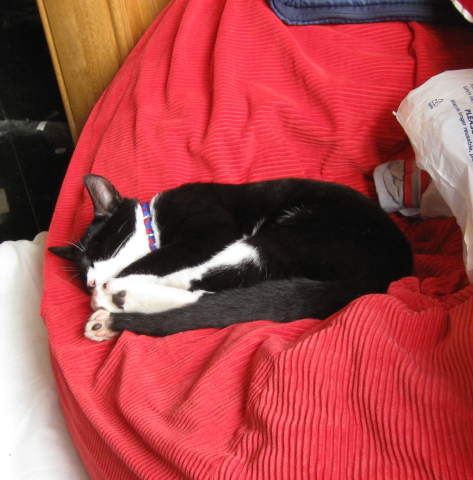
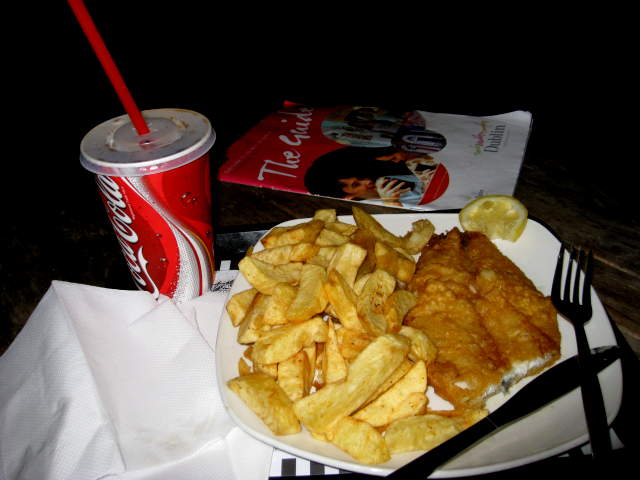

Getting to Dublin was fairly easy. This was going to be my first real "couchsurfing" adventure. I use www.couchsurfing.com fairly regularly to chat with people around the world. Us chatters were having a get-together here in Dublin. I, along with a few others, were promised by one local a place to stay in a place called the "Couching House". These were the types of houses we saw along the way.
Found the place! This is the front door...
Near the front door is the room we were staying in. Fairly spacious, until you pile 5 people in there. That beanbag was very large and comfy. Two spots on the sofas, and floorspace for 2 air mattresses.
The stairs were decorated with pictures from around the world. At the top, there was a bathroom, and also a bunch of doors that led to the bedrooms of our maybe four or five hosts that lived there.
The place was a bit messy here and there, but immaculate considering the challenge they endure, hosting so many travellers.
We were told to make ourselves at home and help ourselves to anything anywhere.
The backyard was filled with plush, shaggy grass, suitable for Arty the cat to romp around and hide in.
You might be wondering why there's a creepy ghost in this picture. So anyway, the four pictured here include two of our hosts, and two fellow couchsurfers. The guy in red, Dan, is the guy who manages the rent and gave us the semi-formal invite. Graham, being transcendental with his crappy beer (especially crappy in Dublin) is wearing black. To the left of them is Barry from Scotland who taught me how exactly to pronounce "cheers" in Scottish Gaelic; "Slainte Mhath", as far as I could tell, sounds like "Slon-zhay Va" I'm pretty sure I'm a bit off, but less than you think. Oh, and sitting down in front is Andrea from England.
To the left is another host, Sara from Mexico. There was a fourth host, Sarah from Germany, but I don't think I got a picture of her. So there's Andrea again. Not to worry. Later on, there are plenty of non-ponytail shots. It was a running joke I embraced, actually. To sign up with www.couchsurfing.com, you have to make a profile. Usually these include photos. Andrea has plenty, but way too many hide her face, showing just the ponytail.
Here's Graham still with his crappy beer, but playing very non-crappy music. Our hosts stopped at nothing to make us feel at peace.
Here's Arty the cat, hiding in his patented shaggy grass, waiting to pounce on the first evildoer who even mentions a lawn mower.

Eventually Arty got tired of that and took a nap on the beanbag. Throughout the night, Arty likes walking around the couch surfer room, jumping and sleeping on anyone in there. It was cute.
Here came my moment. My first real Guinness. No, that's not me. It's my "grizzled Irishman" shot. I looked around for the perfect bar to drink my first Guinness in Dublin. I know the recipe of non-exported Guinness is actually different, so considering how much I like Guinness, I was trembling in anticipation of this moment. I found one with a huge Guinness advertisement above it. Not too fancy, not too shabby. Just right! I told the bartender it'd be my first real Guinness. He took the added pressure in stride. I asked this guy what customary tipping is. He told me, "Don't tip! You'll ruin our fucking economy!" The memories! By the way. The Guinness was exquisite! I love Guinness!
This sign didn't look right. Must be Gaelic.
This spike pierces upwards from the very heart of the Irish. They thought it'd make Dublin look more modern. I guess it achieved that. I would describe it as "recognizable". Ol' Spiky looks amazing at night too. The very tip lights up, along with 4 or so other dots. After trying the Guinness, I understood how they thought to put this spike here. It all makes sense.
Ol' Spiky is in line with other ornaments along O'Connell Street.
This man is obviously someone important. I was expecting leprechauns instead of angels though.
Aha! Got the name on this one, so I could use Wikipedia. James Larkin was a man who worked tirelessly to unionize Irish workers. Dublin United Tramway Company didn't want Jim to unionize his workers, so there was a seven month lockout that revolutionized unionization in Ireland.
We reached a bridge over the main river in Dublin. Here's a view to the left.
Here's a view to the right. In my opinion, they should keep this side and get rid of the other side.
I peeked around Dublin and found that they have what they claim is a highly respected, competitive college -- Trinity College. Now, I'm not sure how prestigious it really is. I checked the world rankings of colleges. Harvard was #1, Oxford was #8. My undergrad college, Rutgers, was near 40. Trinity wasn't even mentioned. Maybe the Guinness makes it harder to be academic.
To be fair, it SEEMED like an impressive university. The campus did compare to those of Harvard and Columbia.
Funky Trinity College sculptures. This probably would have been recognizable if not for the beer.

I walk by this place that looks like it has excellent fish n' chips. Andrea was going on about how she was in the mood for fish n' chips, so I had it on my mind too. This place had a special, "smoked cod". Sounded damn good! I order it. "Sorry, we're out." I ask for unsmoked cod! None. I like salmon! How about salmon! "Sorry". "Okay, what fish DO you have?" "The haddock is nice..." "But do you have it?" "No" ... Okay, they did have the haddock, and aside from a few bones, it was quite good!
Afterrward, I finally met up with the rest of the couchsurfing.com crew! We originally met at a place called "The Living Room". Noisy bar that we decided to move away from, for conversation's sake. We spent a lot of time moving around, but eventually settled down here, where I took this picture. To the left is Kerri, who I've actually met before in couchsurfing get-togethers in New York and Philadelphia. In retrospect, she was the only one I've met before. To the right is Dave of England. He doesn't like having his picture taken. I complimented his hair. He said it's a wig and I could borrow it.
What are we drinking? Irnbru! Made from girders. It's the Scottish equivalent of Mountain Dew. Tastes a little orangy. So Barry was on a quest to find it somewhere in Ireland. It was a lot harder than he'd have liked, but, we found it! Here's free Irnbru advertising. Barry didn't want to pose. He wanted to drink his Irnbru.
Infamous ponytail drinking Irnbru.
Walking around Dublin, I was nearly missed by this pigeon doing you-know-what.
We made it out to a park near Dublin where everyone was being sporty. I got to play soccer in Europe for the first time. It was with a bunch of amateurs, but I stink and haven't played much since I was little. I scored our team's only two goals! (by luck) Even used my head for a scoring attempt. I had fun! Yay!
This is my new Italian friend, Chiara, practicing what she calls "kiwido" and others call "poi". It's basically swinging around these things with tails, tied to strings, often along with music. Chiara was pretty good!
Vanessa was not as good, because it was new to her too, but she was still better than I was. I tried, and I hit myself a lot. I blame Chiara, but she maintains her innocence.
I loved this picture for many reasons. It's artistic. It's dramatic. It's beautiful. But it's also the first picture I took on the Guinness Storehouse tour. Guinness is mostly water, like all beer. Guinness has a section of their brewery tour describing the purity of their water sources, and they provide this waterfall for oohs and ahhs.
Along the tour, they advertise a low alcohol Guinness. This man with zombie eyes I found very hard to photo-edit, provided us with free samples.
More beery exhibits along the tour.
In this door, they talk about the cask-building industry. I watched a wonderful little video showing a barrel being constructed. They mention how it was quite the artform at its peak, but suddenly Guinness went to the much more reliable metal containers, and the barrel-makers had to build something else instead.
Admission to the Guinness Storehouse tour included a free Guinness. You can imagine how difficult it was for me to read through each exhibit when all I really wanted was their beer. Here I was..andguess who I met?
Oh, right, Guinness first. Look at the foam! They are masters at pouring Guinness. They use the tap delicately to trace shamrocks into the Guinness foam.
Behold, Guinness right from the Guinness fountain.
Oh, right, I met these two, and one other they were hanging out with. They're American couchsurfers! Twins I think. I couldn't tell the difference between them. They were two of the guys I played soccer with too. Anyway, what you should notice here is not any of that, but how many Guinnesses they're holding. You're only supposed to get one per person! They have two each, and they had much more than that beforehand. These two were the masters of getting free Guinnesses. They didn't even have to trick anyone. Apparently the bartenders liked them. They gave me some free Guinness too. I will always think fondly of them.
In the Guinness tour, they had a huge projection screen showing Guinness foam.
Here's a place you can go if you wanted to just buy Guinness at a bar. It was closed when I passed through.

After the tour, I headed over to the next big couchsurfing meetup. We were supposed to get together at a bar I've seen before called "The Blue Goose". I forgot where it was though, so it took me a bit, but I made it there nice n' early. We were promised free food too, but they wouldn't serve it until there was way too big a crowd to feed. That was annoying, and they had pretty loud music too, but there were so many couchsurfers there. Not just the ones I chatted with, but also a huge bunch of Irish couchsurfers. So many of them wanted to chat with me. I felt loved :)
I wish I had time to meet all of them, but the few I did get to meet left me with priceless memories. This guy's name is Quiche. Just before I took this picture, he said, "I... am a leek!" He was demonstrating to another couchsurfer what a leek looked like.
Here's Barry again. He put on his kilt, in preparation for a soccer game he was going to watch at a pub. Don't ask any of the usual, "Omigosh, what do you wear under that?" questions. Don't.
This statue stood near the famous Temple Bar in downtown Dublin. I walked by and felt someone tap me on the shoulder. I looked around, wondering who did that. I noticed this statue and saw the cane it was holding. As Sherlock Holmes used to say, eliminate the probable and the improbable must be true. I figured this statue was a living person with the gall to actually stick his cane out and tap people on the back of the shoulder. I was right. He also every so often jumped suddenly, scaring the crap out of unsuspecting tourists.
Here's a cheerful old dude dancing and singing along with a street band. He had some moves, let me tell you.
Or maybe I'll just show you!
He was so exciting, this frat boy got up there and wanted to dance with him. Old dude wanted no part though, so the frat boy tried to laugh it off, only to get rightfully ridiculed by his friends.
This is the famous touristy Temple Bar in downtown Dublin.
Another crowded bar scene in the Temple Bar. It was interesting trying to get to and from the toilet. As the night went on, it got more and more tightly packed.
At first it wasn't too bad though. Vanessa, Andrea and I found these three empty bar stools to enjoy our drinks on. Soon we learned the stools were reserved for the live entertainment, and it was currently between acts. People started cheering for us to start performing. Vanessa goaded Andrea to do her little strip tease. I don't know if she actually has one, but the people were hungry for anything.
Eventually we got booted and these two took over. They were much better performers than we were. Check out the Ramones shirt! That tells you he knows at least three chords.
When we got back to the house that night, we were greeted by this little diddy stealthily written by Barry, the Scottish ninja bard, who says it's a Glaswegian (from Glasgow) nursery rhyme. Andrea and I went into song, singing about tossing grandmothers onto rough asphalt at high speeds.
It was our last night together in Dublin, so we ended up getting a bit drunk. A toy moose became quite the prop, along with Vanessa's banana.
I admit these two more drunk than I was.
While drunk, it was hard to try to get all of us in the picture. Try as I might, I always ended up on the wrong side of the camera. The camera eventually got fed up with my drunken efforts and took this picture for me.
Back